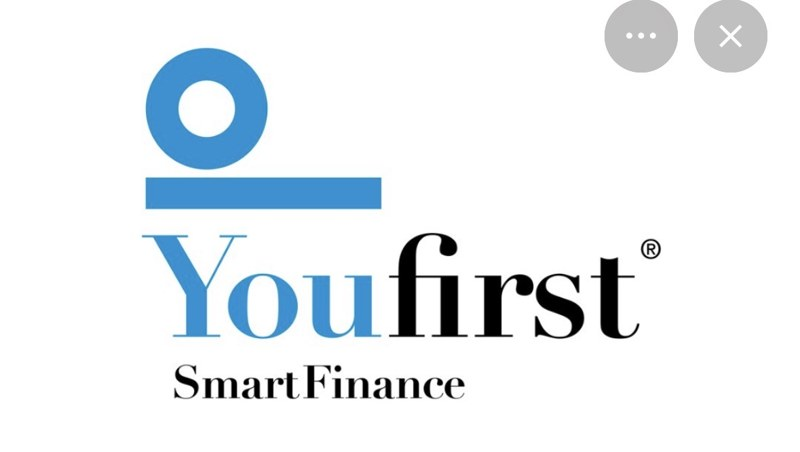
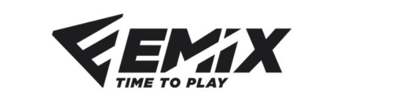
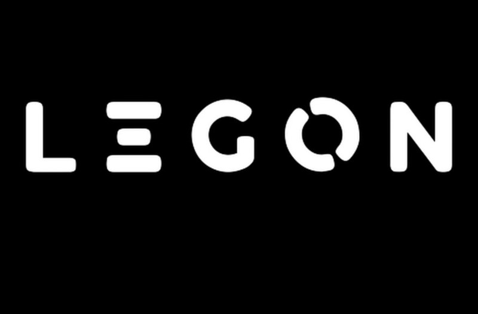

Sección masculina
Del primer equipo a la base. Una estructura pensada para competir, formar y acompañar al jugador en cada etapa.
VER EQUIPOS →Una nueva etapa digital para Rivas Futsal. Club, cantera, sección masculina, sección femenina y toda la comunidad que hace posible que el balón siga rodando.
Los encuentros se cargan automáticamente desde la Real Federación de Fútbol de Madrid. Si la Federación cambia una fecha, la web se actualiza sola.
Las últimas publicaciones del club, en una fila horizontal para recorrer la actualidad de un vistazo.
Rivas Futsal entiende el deporte como competición, formación y comunidad. La identidad del club siempre ha estado ligada a una forma abierta, integradora y solidaria de vivir el fútbol sala.
Cantera, aprendizaje y crecimiento deportivo.
Ambición y exigencia en cada categoría.
Jugadores, familias, afición y comercio local.
Accede a la estructura de equipos de la temporada 2026/27 y descubre la sección masculina y femenina.
Del primer equipo a la base. Una estructura pensada para competir, formar y acompañar al jugador en cada etapa.
VER EQUIPOS →Un proyecto consolidado y con identidad propia, que sigue creciendo desde el fútbol base.
VER EQUIPOS →La evolución de la cantera y la consolidación de la sección femenina forman parte de la historia reciente del club.
El club impulsa un equipo sénior femenino que inicia una etapa de crecimiento dentro de Rivas Futsal.
La estructura de base alcanza doce equipos y continúa ampliando categorías y oportunidades para los más jóvenes.
El sénior femenino firma una temporada histórica con subcampeonato de liga y presencia en el playoff de ascenso.
El club renueva su imagen digital y refuerza la conexión entre competición, cantera, familias y colaboradores.
Entrenadores y delegados forman parte esencial del proyecto. Ahora cada categoría cuenta con su propio espacio dentro de la nueva web.
Su apoyo ayuda a seguir construyendo el presente y el futuro de Rivas Futsal.



La Tarjeta Rivas es exclusiva para sus titulares y da acceso a ventajas en comercios y empresas colaboradoras del club.